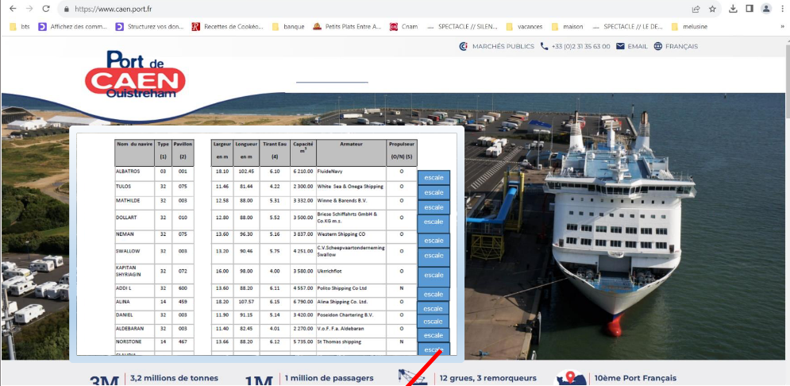
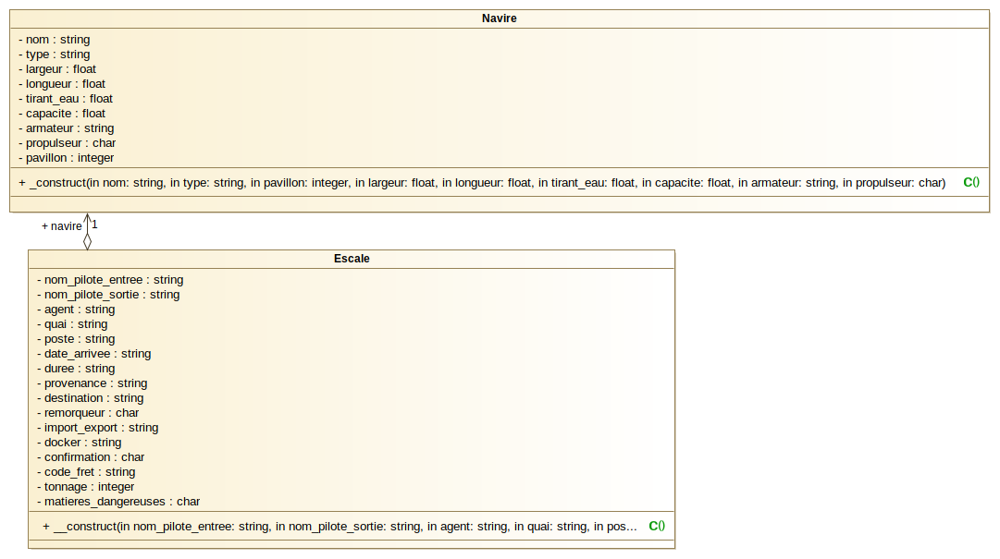
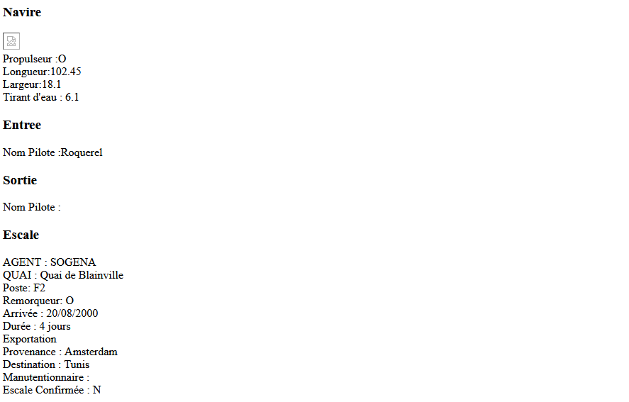
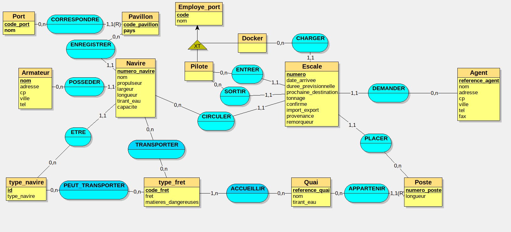

Port

Ce projet présente l’organisation d’un port . Projet rapide afin de réviser la méthode MVC,...
Langages utilisés
HTML PHP SQL
Outils utilisés
BlueFish Looping Xmind
Compétences abordées
B1-1 : Gérer le patrimoine informatique
B1-2 : Répondre aux incidents et aux demandes d’assistance et d’évolution
B1-3 : Développer la présence en ligne de l’organisation
B1-5 : Mettre à disposition des utilisateurs un service informatique
Tâches
Documentation technique
Spécifications fonctionnelles
BD : MLD
Site : MVC


Site
Organisation avec la méthode MVC (index.php src/,template/)
Utilisation d'un layout
Utilisation de classes
Base de données
Création d'un utilisateur pour la BD, permet de gérer les droits
La BD contient 16 tables et 2 vues
